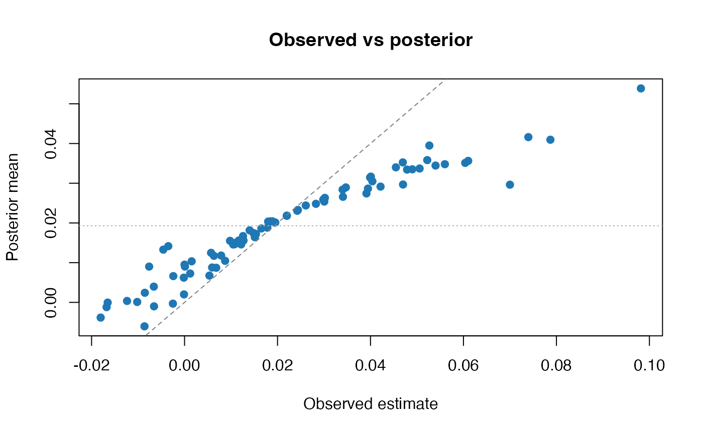

plot.eb_fit() is the main base-graphics plotting entry point for fitted EB
workflows.
Details
Recommended uses:
"diagnostic": four-panel overview combining prior, shrinkage, reliability, and residual plots"prior": prior with observed estimates"shrinkage": observed estimates versus posterior means, optionally colored by q-values when classification output is available"reliability": shrinkage weights against standard errors"posterior": per-unit posterior summaries"variance_ordering"or"mse": higher-level comparison diagnostics
The plot types "pvalue", "qvalue", "frontier", and "volcano" require
a fit that carries classification output.
A useful chooser is:
prior fit or observed-vs-prior comparison:
"prior"shrinkage behavior:
"shrinkage"or"reliability"posterior uncertainty for selected units:
"posterior"decision / FDR views:
"pvalue","qvalue","frontier","volcano"higher-level variance or risk summaries:
"variance_ordering"or"mse"
Examples
data("krw_firms", package = "ebrecipe")
krw_small <- utils::head(krw_firms, 80)
fit <- eb(
x = krw_small$theta_hat_race,
s = krw_small$se_race,
method = "linear",
output = "posterior",
control = eb_control(standardize = FALSE, precision_model = "none")
)
plot(fit, type = "shrinkage")
